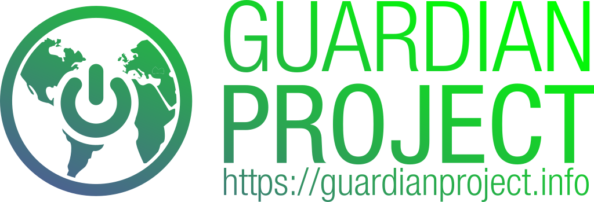

While smartphones have been heralded as the coming of the next generation of communication and collaboration, they are a step backwards when it comes to personal security, anonymity and privacy.
Guardian Project creates easy to use secure apps, open-source software libraries, and customized solutions that can be used around the world by any person looking to protect their communications and personal data from unjust intrusion, interception and monitoring.
Whether you are an average person looking to affirm your rights or an activist, journalist or humanitarian organization looking to safeguard your work in this age of perilous global communication, we can help address the threats you face.

See some of our recent and ongoing work below
Clean Insights gives developers a way to plug into a secure, private measurement platform. It is focused on assisting in answering key questions about app usage patterns, and not on enabling invasive surveillance of all user habits.

Tracking the Trackers develops tools for helping humans inspect and audit Android apps, and sets standards for ethical apps.

Keanu Engine offers app and web experiences that enable safe and secure communication among communities.

Círculo helps connect you to a reliable network of six peers. Establish protocols, send alerts and keep those in your circle informed.

Convene is a matrix-based chat platform that supports sharing of any kind. Rooms are private and encrypted by default.

Onion Browser is your trusted connection to Tor on iOS through a privacy-focused web browser.

Orbot is a Tor-Powered VPN for Android that keeps app traffic safe and unblocked.

Second Wind is an offline content and apps distribution system for Android devices, powered by the F-Droid open app store project.

CDR Link is a secure helpdesk. We provide secure Signal, PGP, Whatsapp & Telegram channels for your community.